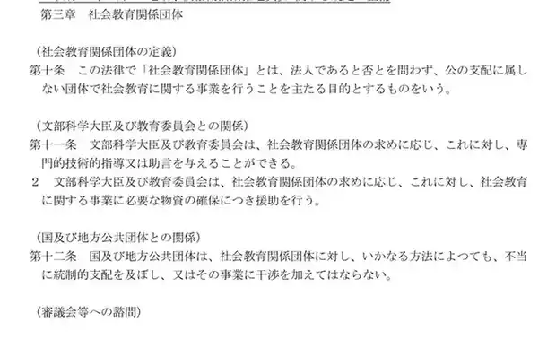
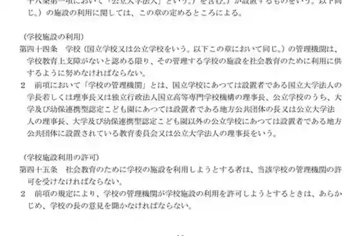

PTAについて教育委員会へ照会すると、「PTAは学校ごとの団体です」「各学校で確認してください」「学校とPTAで協議する事項です」と説明されることがある。しかし、この説明には一つの大きな問題がある。学校を舞台にしていることと、その仕事が学校の内部事務であることは同じではない。
2026年3月9日、文部科学省は中央教育審議会の社会教育の在り方に関する特別部会に「社会教育法の主な改正経緯について」を提出した。そこに並ぶ社会教育法の条文を、PTAとの関係から読むと、教育委員会、学校、社会教育関係団体、学校施設の管理機関が意識的に分けられていることが見えてくる。［1］
PTAが学校と密接に関係していても、それだけでPTA内部事務が学校の事務になるわけではない。社会教育法は、学校教育、社会教育行政、社会教育関係団体、学校施設管理を別の主体・権限として配置している。「学校ごとのこと」と説明するなら、まず何を学校の事務と整理しているのか、その法的根拠を示す必要がある。
本稿の射程
社会教育法だけから、PTA会費の学校徴収、学校保有個人情報のPTA利用、教職員によるPTA事務を直ちに違法と結論づけるものではない。それらは個人情報保護法、地方公務員法、学校教育法、地方自治法、各自治体の条例・規則等を別途確認する必要がある。本稿が扱うのは、その前段にある「そもそも誰の事務なのか」という主体の整理である。
1 社会教育法は、最初から「学校教育」と「社会教育」を分けている
社会教育法2条は、社会教育を定義する際、学校教育法等に基づき「学校の教育課程として行われる教育活動を除き」、主として青少年及び成人に対して行われる組織的な教育活動と規定する。［1］
ここで重要なのは、活動場所ではなく法的な性質で区別していることである。学校の校舎で行われる活動でも、学校の教育課程として行われる教育活動とは限らない。逆に、児童生徒、保護者、教職員が関わるからといって、当然に学校教育になるわけでもない。
PTA問題でまず避けるべきなのは、「学校に関係する活動だから学校の仕事だ」という循環である。学校との関連性は、学校の事務であることの根拠にはならない。学校教育として行うのか、社会教育行政として扱うのか、民間団体であるPTA自身が行うのかを分ける必要がある。
2 社会教育の主語は「各学校」ではなく、教育委員会でもある
社会教育法5条は、市町村教育委員会について「社会教育に関し」行う事務を列挙している。社会教育に必要な援助、学校が行う社会教育講座の奨励、家庭教育に関する学習機会や情報の提供、放課後・休日に学校等を利用して行う活動機会の提供などである。［1］
つまり、学校を使う活動、家庭教育に関する活動、児童生徒を対象にした学校外の活動であっても、法はそれを直ちに「各学校の自主的な仕事」とは置いていない。教育委員会自身に社会教育行政の事務を置いている。
さらに5条2項は、地域住民等が学校と協働する「地域学校協働活動」を実施する場合、教育委員会が連携協力体制の整備、普及啓発その他必要な措置を講ずるものとしている。学校と地域が協働するからこそ、教育委員会の制度設計が消えるのではなく、むしろ明示されている。
3 PTAは「学校そのもの」ではなく、社会教育関係団体として位置付けられてきた
社会教育法10条は「社会教育関係団体」を、法人であるか否かを問わず、「公の支配に属しない団体」で、社会教育に関する事業を行うことを主たる目的とするものと定義する。11条は、文部科学大臣や教育委員会が、その団体の求めに応じて専門的技術的な指導・助言や物資確保の援助を行えるとする。12条は、国や地方公共団体が不当に統制的支配を及ぼしたり、事業に干渉したりすることを禁止する。［1］


文部科学省は2019年の「PTA活動実践事例集」で、PTAについて社会教育法10条の「社会教育関係団体」であると説明している。また2025年4月22日の文部科学大臣会見でも、PTAを学校・家庭・地域の連携協働に重要な役割を果たす「社会教育関係団体」と述べている。［2］［3］
この位置付けから見れば、PTAの規約、加入、退会、役員選出、会員管理、会計などは、原則としてPTA自身の団体運営の問題である。教育委員会がPTA内部を一方的に統制できないという説明には根拠がある。
しかし、ここから「だから学校や教育委員会には関係がない」という結論は出ない。PTAの自主性と、公立学校側の公的事務についての行政責任は別の軸だからである。 PTA内部へ不当に干渉しないことと、学校の職員・情報・口座・システム・施設がPTAのために使われる場合の根拠を確認することは両立する。
4 学校施設ですら、法律上の「管理機関」は原則として教育委員会である
この資料でもっとも象徴的なのが、第6章「学校施設の利用」である。
社会教育法44条は、学校の「管理機関」が、学校教育上支障がないと認める限り、学校施設を社会教育のために利用に供するよう努めると規定する。そして通常の公立小中高校等について、その「学校の管理機関」＝教育委員会と明記する。45条は、社会教育のため学校施設を利用する者は管理機関の許可を受け、管理機関が許可しようとするときは、あらかじめ学校長の意見を聞くとしている。［1］


さらに47条は、学校施設利用が一時的な場合、管理機関が許可権限を学校長へ委任できると規定する。つまり、校長が許可する運用があり得ること自体は法律も予定している。しかし重要なのは、「校長が決める」ことと「もともと学校固有の権限である」ことは別だという点である。委任によって校長が行うなら、原権限と委任根拠を確認できる。
PTAによる会議室、印刷室、職員室内の保管場所、学校の複合機その他施設の継続利用について「学校が認めています」で説明を終えるのではなく、どの管理規則・許可・委任に基づくのかを確認する必要がある。
5 PTA問題は、最低でも四つに分けて考える必要がある
社会教育法の構造をPTA実務に当てはめると、「学校とPTAの関係」を一つの箱で処理することが難しいことが分かる。少なくとも、次の四つを分離して考える必要がある。
| 領域 | 典型例 | まず確認する主体・根拠 |
|---|---|---|
| 学校教育 | 教育課程、授業、学校教育上の指導 | 学校教育法、教育課程、校務分掌等 |
| 社会教育行政 | 家庭教育支援、地域学校協働、社会教育への援助 | 教育委員会、社会教育法5条等 |
| PTA内部事務 | 入退会、会員管理、役員選出、会費債権、PTA会計 | PTA自身の規約・合意・団体運営 |
| 公立学校の施設・資源 | 教室利用、学校設備、学校口座・システム、教職員の作業 | 教育委員会・学校設置者、施設管理・服務・個別法令 |
特に問題になるのは、三つ目の「PTA内部事務」を四つ目の「公立学校の資源」で処理するときである。PTAが独立した団体であるなら、PTA内部事務が学校の校務へ移るには、その接続部分の説明が必要になる。
6 会費、個人情報、教職員事務でも、最初の問いは同じである
例えば学校がPTA会費を徴収している場合、「保護者が同意している」「PTAから委任されている」だけでは、学校側の説明は完結しない。誰が受任主体なのか、その受任は公立学校のどの事務として処理されるのか、教職員が勤務時間中に行う根拠は何か、学校口座・徴収システムを使える根拠は何かを別途確認する必要がある。
学校が保有する児童生徒・保護者情報をPTAの会員管理、役員選出、会費徴収へ利用・提供する場合も同じである。個人情報保護法上の同意の有無だけでなく、学校側の所掌事務・利用目的を先に確認する必要がある。
ここで社会教育法が直接すべての答えを与えるわけではない。しかし、「PTAのことだから学校」「学校でやっているから校務」という説明を止め、主体ごとに根拠を尋ねる入口を与える。
7 教育委員会が「学校ごとの判断」と答えるなら、確認すべきこと
教育委員会がPTA関係の運用を「各学校の判断」と説明する場合、その回答だけでは主体と権限の整理になっていない。少なくとも、次のように具体化する必要がある。
貴教育委員会が「学校ごとの判断」としているPTA関係事務について、①学校教育法上の学校の事務、②社会教育法5条等に基づく教育委員会の社会教育事務、③社会教育関係団体であるPTA自身の内部事務、④社会教育法44条以下その他の法令に基づく学校施設・公的資源の管理事務のいずれに位置付けているのかを示してください。
また、学校長又は教職員が処理する場合は、その権限の根拠、委任・職務命令・校務分掌その他の根拠を示してください。
この質問は、教育委員会にPTA内部へ介入するよう求めるものではない。逆である。PTA内部の自主性を尊重しつつ、公立学校側が関与する部分だけを公的事務として説明することを求めるものである。
8 「学校とPTA」の一語で境界を消してはいけない
社会教育法は、社会教育が学校教育と密接な関連を持つことを認め、学校・家庭・地域の連携を促進している。同時に、学校教育、教育委員会の社会教育事務、社会教育関係団体、学校施設の管理を別々に規定している。
この構造から読み取るべきなのは、連携とは境界の消滅ではないということである。PTAと学校が協力すること、教育委員会が社会教育を支援すること、学校施設を社会教育に利用することは予定されている。しかし、それぞれに主体と権限がある。
「PTAは学校にある」「学校と密接に関係する」という事実から、「PTAの事務は学校の事務である」とは導けない。教育委員会がPTA問題を学校へ戻すなら、何が学校の事務で、何がPTAの内部事務で、何が教育委員会又は設置者の公的管理事務なのかを先に分ける必要がある。社会教育法は、その境界を読み解くための重要な基礎資料である。
一次資料
- 文部科学省「社会教育法の主な改正経緯について」、中央教育審議会生涯学習分科会・社会教育の在り方に関する特別部会（第16回）資料2、2026年3月9日、全13頁。
- 文部科学省「PTA活動実践事例集」。PTAについて社会教育法10条の「社会教育関係団体」であると説明している。
- 文部科学省「あべ俊子文部科学大臣記者会見録（令和7年4月22日）」。PTAを学校・家庭・地域の連携協働に重要な役割を果たす社会教育関係団体と説明。
- 文部科学省「学制百二十年史――社会教育関係法令の成立」。社会教育法が教育委員会の社会教育に関する権限・任務を明確化する必要から制定された経緯を説明。